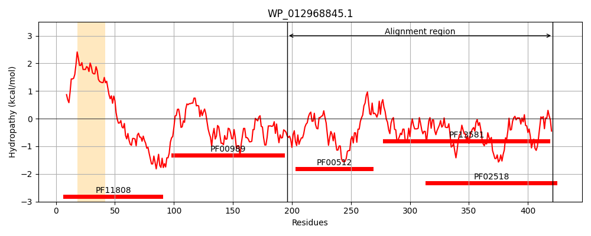
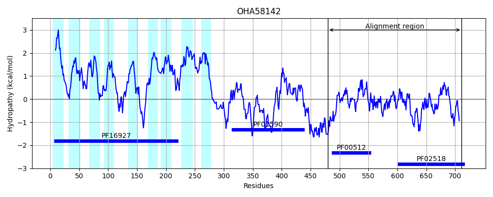
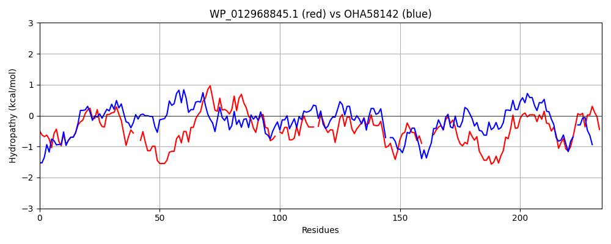

Hit Accession: OHA58142
Hit TCID: 9.B.259.2.2
Hit Description: gnl|BL_ORD_ID|7922 gnl|TC-DB|OHA58142.1|9.B.259.2.2 hypothetical protein A2607_01510 [Candidatus Vogelbacteria bacterium RIFOXYD1_FULL_42_15]
Mach Len: 234
e:0.000000
Query TMS Count : 1
Hit TMS Count: 9
TMS-Overlap Score: 0.000000
Predicted Substrates:None
BLAST Alignment:
Score: 254 , Bit scores: 102 bits, E-value: 2.3e-23, Alignment length: 234, Percentage identity: 29
Query: 196 QMHQLEGARRNFFANVSHELRTPLTVLQGYLEMMQEQVLE--GATREKALHTMREQTQRMEGLVKQLLTLSRIEAAPALAMNDRIDVPMMLRVVEREAQ-TLSQEKQTLIFTVDE-QLKVLGNEEQLRSAISNLVYNAVNHTPPGTEIRVSWQRTPQGAL----FSVEDNGPGIAPEHIPRLTERFYRVDKARSRQTGGSGLGLAIVKHAVNHHDSRLEIDSTVGKGTRFSFLL 421
++ +L+ + F + SH+LR+PLT ++GY M+ E A +A+ + E +Q++ G+++ L ++RIE +D+ M+ E + ++S+ T+ F+ + +LG+ +L N++ NA+ +T G +I VS R +G F +D G GI +++P+L E+F R D A G+GLGL + K V H+ ++ +ST GKG +F++
Sbjct: 480 KLKELDKQKTEFVSIASHQLRSPLTAIKGYSSMLLEGSFGKLSAKSREAVQIVFESSQKLVGVIEDFLNITRIELGKMKYEMSVLDMSKMVESTINELKPSISRRGLTISFSAEGGPFNILGDPSKLNQVFLNVIDNAIKYTEKG-DIAVSISRRQEGGKNLIRFESKDIGVGIDADNLPKLFEKFIRADGAGKTNISGTGLGLFVAKQIVEAHNGKIWAEST-GKGHGSTFIV 711 | Protein Hydropathy Plots: |
|---|
|  |  |
Pairwise Alignment-Hydropathy Plot:
|
|---|
|  |